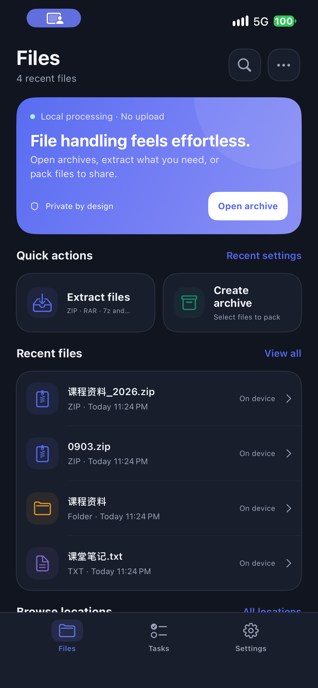

ZIPHARBOR / IPHONE + IPAD
Your archives.
Handled with care.
Open archives, extract what you need, and pack files to share. ZipHarbor keeps archive processing on your iPhone or iPad, without an account or ads.

Open and inspect
Browse archive folders and preview supported files. ZIP, 7z, TAR and unencrypted RAR are among the supported formats.
Create and protect
Create ZIP or standard 7z archives. Use ZIP AES encryption when password protection is needed.
Choose your destination
Save through the system Files picker. Handle name conflicts and open or share the result.
Local by design
Files are processed on your device. Cloud-provider transfers and sharing follow the services you choose.